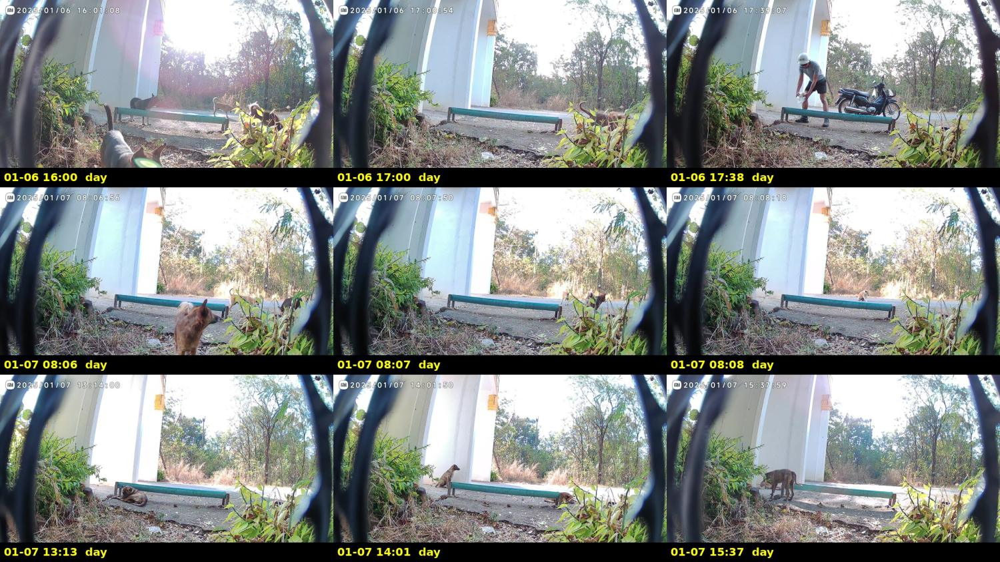
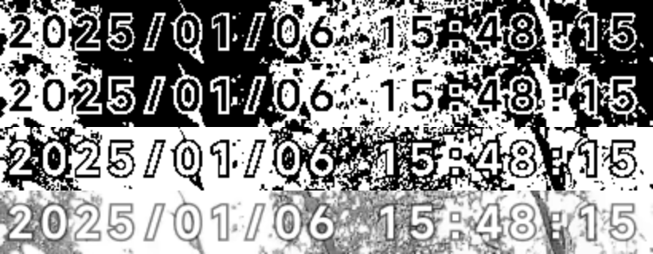
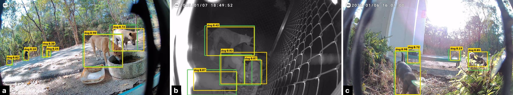
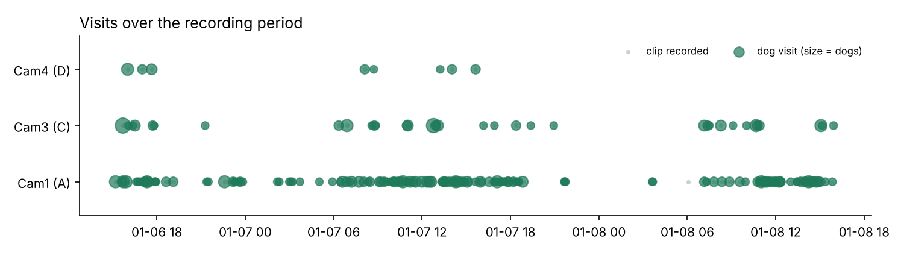
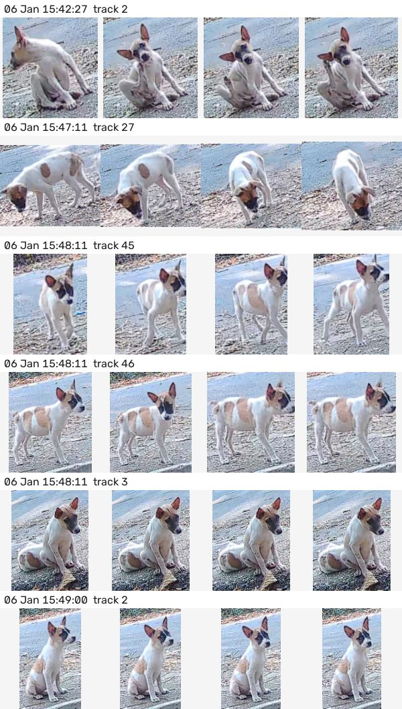

Finding stray dogs in raw camera footage from Chiang Mai
Everything about the project in one place: the task, the data and its hidden problems, the pipeline and why each choice was made, how it was evaluated, the final results, the dog recognition design and demo, the limitations, and what to say in the presentation.
Repository Epp-ppE/stray-dog-detection (branch main)Status as of 26 Nov 2026: all deliverables doneFootage 6–8 Jan 2025, 3 cameras
The project in five sentences
Three cameras at community feeding spots in Chiang Mai recorded 447 short clips with no labels. Before modelling, 22 duplicate files were removed and Camera1's wrong timestamps were fixed by reading the clock burned into the video. A pretrained YOLO11 detector, with every animal class counted as "dog", finds dogs with AP@0.5 = 0.75 on hand-labelled test frames, against 0.44 for the baseline. ByteTrack then follows each dog through a clip, giving conservative visit and activity statistics: Camera1's feeding area sees about 45 dog visits a day. A design for recognising individual dogs is written up, and a small demo groups 150 tracks into 72 candidate dogs.
1The assignment
Stray dogs in Thai communities raise public-health (rabies), road-safety and welfare problems. Vaccination, sterilisation and community care all need basic facts: how many dogs, where, when, and how they behave. CMKL students placed cameras at community feeding spots in Chiang Mai. The footage is raw: no labels, no annotations. The task: design and build a complete pipeline that detects dogs and locates them, and turn the detections into useful information.
Deliverables and where they are
Deliverable
What it must contain
Where
Status
Source code
Environment setup, dependencies, instructions to reproduce every result
Pipeline and why; results with success and failure examples; limitations; evaluation method (metrics, validation, baselines)
report/report.pdf (11 pages)
done
Dog recognition
Design for telling individual dogs apart (code optional)
docs/recognition_design.md, section 7 here, demo in src/reid_demo.py
done + demo
Presentation
Slides
slides/slides.pdf, editable slides/slides.pptx with speaker notes
draft done
Extras
Line-by-line code explanation; this brief
docs/code_walkthrough.pdf, docs/project_brief.pdf
done
Still for you to do
Put your name on the report header and the title slide.
Rewrite the slide speaker notes in your own words, and restyle the slides if you like.
Check the assignment brief for a page limit or required headings.
2The data
The footage is stored in the repository's GitHub release data-v1 as three zip files (2.4 GB). Every video is a short clip recorded when the camera sensed motion. All cameras are the same Xiaomi model.
Camera
Scene
Files
Unique
Footage
Days
Night clips
Camera1 (Location A)
Fenced feeding spot, buckets and food mats
341
341
116.6 min
6–8 Jan
58
Camera3 (Location C)
Roadside water trough at a forest edge
74
73
26.0 min
6–8 Jan
7
Camera4 (Location D)
Bench beside a building, behind plants
32
11
4.0 min
6–7 Jan
0
Total
447
425
2.44 h
65
Every clip is 2560×1440 pixels, 15 frames per second, H.265 (HEVC) video with sound, 3 to 30 seconds long. "Night" clips are the camera's infrared mode: black-and-white, with bright glare near the lens.
Camera3 (Location C). Day frames and three infrared night frames. One clip shows a hand covering the lens, a typical source of false alarms.
Camera1 (Location A): many puppies, chain-link fence in front.

Camera4 (Location D): dogs often half hidden; a person with a motorbike appears.
Two problems hidden in the raw files
Problem 1 · duplicate files
22 of the 447 files are exact byte-for-byte copies (found by comparing a fingerprint of every file's contents). Camera4 has 21 of them: names ending in (1) or (2), the usual sign of downloading the same file several times. Camera3 has one re-shared copy. If they were not removed, the same dog visits would be counted two or three times. Fix: the pipeline keeps one copy of each (425 unique clips) and never deletes raw files.
Problem 2 · Camera1's filenames give the wrong time
Camera3 and Camera4 filenames are timestamps (milliseconds since 1970) that match the clock burned into the video. Camera1's names, like VIDEO_20250108_161610468, all say 8 January 16:16 to 18:24, but the clock in the picture shows dates from 6 to 8 January, including the middle of the night. The names are most likely the time the clips were exported from the phone app, not recorded. Any "time of day" statistic for Camera1 built on the filenames would be wrong.
How the real time was recovered
The obvious tool, Tesseract text recognition, read only 2 of 20 test clips: the clock is white text with a thin dark outline, and on a bright sky the white disappears.

The clock strip after four kinds of clean-up. A person can read 2025/01/06 15:48:15, but background clutter defeats general text recognition.
Because the font, size and position never change, each of the 14 digit positions can be cut out and recognised on its own with a small classifier (k-nearest-neighbours on HOG shape features). The training labels came for free: Camera3/4 filenames give the exact true time of every frame. Tested on 25 clips it never saw:
Measure (held-out clips)
Result
Single digits read correctly
99.5%
Whole timestamp correct in a single frame
93.4%
Clip start time (median over all frames of the clip), error
≤ 0.13 s on all 25 clips
Applied to Camera1, every clip got a start time on which at least 80% of its frames agree. One spot check: a clip whose middle frame shows 15:01:24 gets a computed mid-time of 15:01:23.4. This is a good story for the report: the raw data had a hidden error, and it was detected, measured and corrected.
3The pipeline
Each step and why
Prepare. Find duplicates by file fingerprint; give every clip its real start time (filename for Camera3/4, clock reader for Camera1). Why: without this, visits are double-counted and Camera1's times are wrong.
Sample frames. Analyse 3 frames per second, shrunk from 2560×1440 to 1280×720. Why: there is no GPU. Neighbouring frames at 15 fps are nearly identical, and 3 fps still follows a walking dog: 5× less work.
Detect. YOLO11m (medium) pretrained on COCO, at 960 px input. Every COCO animal class (dog, cat, horse, sheep, cow, bear) is counted as "dog", and duplicate boxes on the same animal are removed (class-agnostic NMS, IoU 0.6). All boxes down to 1% confidence are stored. Why: no labels to train on, so a strong pretrained detector is the honest baseline. The model calls puppies "cat" and infrared dogs "sheep" or "cow" (section 5). Storing weak boxes lets thresholds be tuned later without re-running the model.
Track. ByteTrack links boxes of one dog across frames into a track. A track counts as a confirmed dog if it lasts ≥ 2 sampled frames and reaches confidence ≥ 0.10 at least once. These settings were chosen on the dev clips by trying 64 combinations. Why: removes one-frame flickers, and gives time on screen and movement per dog.
Statistics. Per camera: visits, dogs per visit, dog-minutes by hour, moving versus resting, close contact between dogs.
Visit
Consecutive clips with dogs on one camera, merged when the gap is ≤ 2 minutes (the camera records bursts of short clips).
Dogs in a clip
The most confirmed tracks visible in any one frame. A lower bound on distinct dogs that does not grow when the tracker loses and re-finds a dog.
Dog-minutes
Number of dogs on screen in each frame, summed over time. Two dogs for one minute = two dog-minutes.
Moving
Box centre moves faster than 0.25 body lengths per second (box height used as body length).
Close contact
Two dogs whose box centres are closer than their average box width.
Speed (4 CPU cores, no GPU)
Model
640 px input
960 px input
YOLO11n (nano)
41 ms / frame
85 ms
YOLO11s (small, baseline)
83 ms
204 ms
YOLO11m (medium, final)
226 ms
492 ms
Final full run: 26,325 frames from 425 clips in 2.7 hours (YOLO11m @960). The baseline YOLO11s @640 takes 47 minutes.
4How it was evaluated
There were no labels, so a test set was made by hand: you labelled 180 frames.
180 frames from 115 clips, chosen at random by the computer before looking at any detections, so the test isn't tilted towards what the model finds easy. Balanced by camera and day/night: Camera1 50 day + 20 night, Camera3 45 + 15, Camera4 50 day.
Labelling rules: one box per dog over its visible part; hard flag for dogs under about a quarter visible or too unclear to be sure. Result: 332 dog boxes, 28 hard, 20 empty frames.
Split by clip: dev (87 frames) for choosing thresholds, tracker settings and the final model; test (93 frames) only for the reported numbers.
A prediction is correct if its box overlaps a labelled dog with IoU ≥ 0.5. Hard dogs are ignored either way.
Metrics: AP@0.5 (= mAP@0.5 with one class), precision, recall and F1 at the dev-chosen threshold, with 95% intervals from 1,000 bootstrap resamples of the test frames.
Baseline: the obvious default, YOLO11s at 640 px using only the "dog" class. Compared against: model size (n/s/m), input size (640/960), counting other animal classes, and the tracking filter.
IoU
Overlap between two boxes: shared area ÷ combined area (0 = none, 1 = identical).
Precision
Of the boxes drawn, the share that are real dogs. Low = false alarms.
Recall
Of the real dogs, the share found. Low = missed dogs.
F1
Balance of precision and recall (harmonic mean). Used to choose thresholds on dev.
AP@0.5
Area under the precision–recall curve over all thresholds: the standard single score for a detector.
Bootstrap
Re-draw the 93 test frames with replacement 1,000 times and recompute; the middle 95% of results is the interval.
5Results
Test AP@0.5 with 95% intervals. Light green: every animal class counted as dog.
Setup (test half)
AP@0.5 [95% CI]
Precision
Recall
F1
YOLO11n @640
0.34 [0.26–0.42]
0.77
0.34
0.48
YOLO11s @640 (baseline)
0.44 [0.36–0.52]
0.71
0.44
0.54
YOLO11m @640
0.57 [0.49–0.65]
0.91
0.56
0.70
YOLO11s @960
0.48 [0.40–0.56]
0.82
0.46
0.59
YOLO11m @960
0.58 [0.49–0.67]
0.84
0.59
0.69
YOLO11s @640 + animals
0.64 [0.57–0.71]
0.77
0.61
0.68
YOLO11m @640 + animals
0.69 [0.62–0.75]
0.87
0.67
0.76
YOLO11m @960 + animals (final)
0.75 [0.67–0.83]
0.81
0.75
0.78
YOLO11s @640 + tracking (original settings)
0.31 [0.23–0.40]
0.98
0.31
0.47
Final + tracking (tuned; used for statistics)
0.54 [0.47–0.63]
0.95
0.54
0.69
The key findings
Counting every animal class as dog is the biggest single gain (+0.17 to +0.20 AP). Of the dogs the final model found, 28% had a non-dog label as its top guess, mostly "cat" (puppies); at night 52%. Night AP rose from 0.42 to 0.76.
Model size matters more than input size. s → m adds 0.13 AP; 640 → 960 px helps only together with the animal merge.
Recall, not precision, is the limit. All setups have precision 0.7–0.9; missed dogs are the main error.
The useful confidence threshold is about 0.02, not the usual 0.25. The model is badly calibrated on this footage: many correct dogs score below 0.1. At 0.25, precision is 0.98 but recall drops to 0.60.
The final setup was chosen by dev AP (0.79); it also ranks first on test.
Where it works (final, all 180 frames)
AP@0.5
Recall
Baseline AP
Camera1 (fenced area)
0.70
0.70
0.41
Camera3 (trough, road)
0.82
0.84
0.60
Camera4 (bench, plants)
0.79
0.80
0.34
Day / Night (infrared)
0.77 / 0.76
0.77 / 0.76
0.48 / 0.35
Dog size: large / medium / small / tiny
0.93 / 0.83 / 0.57 / 0.33
Of the 180 frames, 109 are fully correct, 51 have a missed dog and 20 a false alarm. In the pictures: green = your label, yellow = correct detection, red = false alarm, magenta = missed dog, dashed orange = hard (ignored).

Successes. (a) Camera3: six dogs, four tiny ones on the far road found at confidence 0.02–0.30. (b) Camera1 at night: four dogs including a pile of puppies. (c) Camera4 against the sun: dogs in plants and behind the bench.False alarms. (a) A pile of puppies gets an extra box spanning two. (b) Part of a motorbike and rider at confidence 0.02. (c) A dog lying in plants gets a second, shifted box.Missed dogs. (a) Dark puppies at the back and a dog behind the fence mesh. (b) Infrared glare washes out a dog at the bowl. (c) A black dog cut off at the lens edge, pressed against others.
6Tracking and what the cameras saw
Tracking trades recall for precision: boxes in confirmed tracks are 95% correct (5 false alarms in 93 test frames) but only 54% of dogs are kept, against 81% and 75% for the detector alone. That is the right trade for statistics: a false track invents a visit, while a dog missed in some frames is usually found in others. So the numbers below are lower bounds. In total: 1,073 confirmed tracks in 413 of 425 clips.
Camera1 (feeding area)
Camera3 (trough)
Camera4 (bench)
Clips / footage
341 / 117 min
73 / 26 min
11 / 4 min
Clips with a dog
98%
92%
100%
Visits
136 (45/day)
34 (11/day)
8 (4/day)
Median visit length
32 s
29 s
22 s
Most dogs in one frame
4
7
4
Mean dogs per visit
1.8
2.2
2.1
Dog-minutes on screen
132
44
4
Share of dog time moving
11%
16%
23%
Night visits
29
4
0
Grey: footage recorded per hour. Green: dog-minutes detected. Green can exceed grey when several dogs are on screen together.

Every visit over the three days; bigger dot = more dogs.
The motion trigger almost always fires for dogs: 92–100% of clips contain a confirmed dog.
Camera1's feeding area is the busiest: about 45 visits a day, 06:00–18:00 plus some night visits. Camera3's 15:00 peak with 7 dogs is a litter of puppies on 6 January.
Dogs mostly stand, eat and drink: only 11–23% of dog time is moving.
Caution: cameras only record when triggered and there are only three days, so hour-of-day patterns reflect these days and feeding times, not a general routine.
7Dog recognition: the full design
Detection says "a dog is here". Recognition (re-identification, "re-ID") says "this is dog #12, last seen yesterday at 08:05 at Camera3". That turns per-clip counts into a population estimate, per-dog visit histories and a list of dogs still to vaccinate or sterilise. The same design is in docs/recognition_design.md.
clip → frames → detector → ByteTrack → confirmed tracks → best crops per track (sharp, large, not hidden) → embedding model → one vector per track → match against the gallery of known dogs (+ time and place) → same dog: add to its history | new dog: new gallery entry
7.1 Unit of recognition: the track
A track already groups several views of one dog inside a clip, so its crops can be averaged, which is more robust than one picture. The tracker handles identity within a clip; recognition only links tracks across clips.
7.2 Data collection
Step
What
Why
Free positives
Every confirmed track = several crops of one dog
"Same dog" pairs with no labelling
Free negatives
Two tracks visible in the same frame are different dogs
Hard "different dog" pairs (same place, same light) with no labelling
Human linking
A person groups tracks across clips into named dogs (dog-01, dog-02 …) with a page like the labelling tool
The only manual step; 20–30 dogs give a usable test set
Distinctive marks
Note coat colour, patches, ear shape, collar, ear-notch (sterilised dogs in Thailand are often ear-notched)
Weeks, not 3 days; add a side-on camera at dog eye level
Most crops here are top-down with the head in the bowl
Splits: by dog and by day. Test dogs never appear in training, and gallery and query images come from different days, so the model can't win by matching the same lighting or moment.
7.3 Features and model
Baseline, no training: a general pretrained image model as a feature extractor (the demo uses the YOLO11 ImageNet classifier; DINOv2 or CLIP are alternatives). Captures coat colour, patches and body shape. Compare tracks by cosine similarity.
Fine-tuned re-ID model: same backbone plus an embedding head, trained with a metric-learning loss (triplet loss with hard-negative mining, or ArcFace) so crops of the same dog land close together. Train on public animal re-ID data first, then on locally linked tracks.
Part-aware features: pool head, torso and legs separately, or mask hidden parts, so the fence or a bowl doesn't dominate.
Track-level averaging: embed the best 5–10 crops of each track and average them.
Separate day and night galleries: infrared removes colour, so a brown and a black dog can look the same. Night tracks use shape-only features and a stricter threshold, or link to day tracks only via time and place.
7.4 Matching
Similarity: cosine similarity between track vectors.
Time and place: same camera within about 2 minutes → very likely the same dog. Two dogs in the same frame can never be one dog ("cannot-link").
Open-set decision: if the best match is below a threshold, it's a new dog. The threshold is set on held-out dogs to balance wrong merges against wrong splits.
Counting: cluster all tracks (average linkage, with cannot-link rules); the number of clusters estimates the number of distinct dogs.
Human in the loop: unsure links go to a person; each confirmed link becomes training data.
7.5 Evaluation
Metric
Question it answers
Rank-1 / Rank-5 accuracy
Is the right dog the top (or a top-5) match?
re-ID mAP
How well are all images of the right dog ranked?
Pairwise precision / recall
Of the "same dog" links made, how many are right, and how many true links are found?
Count error
Does the number of clusters match the number of distinct dogs?
Per condition
Day vs night, same vs other camera, puppy vs adult
7.6 Challenges in this footage
Look-alike puppies (black ones at Camera1, white-and-tan ones at Camera3); infrared removes colour; mostly top-down head-in-bowl views with faces hidden; the fence, plants and overlapping dogs; puppies grow within weeks; wide-angle distortion at the edges; far dogs only a few dozen pixels tall; short clips with few usable crops; collars mean "owned", which appearance alone can't settle.
Privacy: galleries are built only for dogs. People (feeders, a motorbike rider, a hand on the lens) are never identified; person detections would only be used to blur or discard frames.
7.7 The demo (src/reid_demo.py)
The design's baseline was built, with no training and no identity labels, on Camera3:
Up to 4 sharp crops per confirmed track; skip crops smaller than 12% of frame height or overlapping another dog.
Describe each crop with YOLO11s-cls features (512 numbers) plus a colour histogram; average over the track.
Cluster tracks (average linkage, cosine distance < 0.5); two tracks in the same frame are never grouped.
Result: 150 tracks → 72 candidate dogs, 30 of them seen in 2+ clips. Without identity labels accuracy can't be measured, so these are candidates for a person to check.
Looks right: the same white puppy with a black face patch, 7 tracks in 6 clips, 6–8 January.

Mixes dogs: several look-alike littermates joined. Generic features see coat colour and pose, not the fine details that separate siblings. Fine-tuning and part-based features are meant to fix this.
8Limitations and failure modes
Small and far dogs: recall 0.93 for large dogs, 0.33 for tiny. Fix: tile the frame, or a GPU at 1280 px.
Lighting: infrared loses colour and texture; glare near the lens; backlight at Camera4.
Occlusion: the chain-link fence over all of Camera1, plants, bowls, piles of puppies (one box for two, or an extra box spanning two).
Calibration: correct boxes often score under 0.1, so the threshold (about 0.02) is far below the usual 0.25. A new camera or season would need re-checking.
Domain gap: the detector never saw this footage, puppies or infrared. Fine-tuning on a few hundred local frames is the biggest likely improvement; your labels were kept for honest evaluation instead.
Small test set: 93 test frames give about ±0.08 AP; neighbouring setups are within noise. Camera4 has only 11 clips.
Dogs, not "stray" dogs: telling stray from owned needs collars, owners, context.
Counts are lower bounds: missed and off-screen dogs aren't counted; the same dog in two visits is counted twice (needs recognition).
Three days only: patterns describe these days, shaped by feeding times.
9Presentation: likely questions and short answers
Why no training?
There were no labels. A pretrained detector is the honest baseline, and my 180 labels were kept for unbiased evaluation. Fine-tuning is the first next step.
Why count cats as dogs?
COCO has no puppies and no infrared. The model calls puppies "cat" and night dogs "sheep" or "cow". No other animals appeared in the labelled frames, so merging recovers dogs with little cost. Near farms it would need checking.
Why threshold 0.02?
Chosen on dev by best F1. The model is under-confident on this footage; at 0.25 recall drops from 0.75 to 0.60.
How do you know it's not overfitted?
Frames were picked at random before seeing outputs, split by clip, everything tuned on dev, and numbers reported on test with bootstrap intervals.
Why does tracking lower recall?
It drops short, weak tracks. That raises precision to 0.95, which matters more for statistics, so counts are conservative.
Biggest weakness?
Small and far-away dogs, and dogs behind Camera1's fence.
How would you count individual dogs?
Recognition (section 7): embeddings per track, time and place rules, open-set matching, a person confirms unsure links.
The data problems?
22 duplicates removed by fingerprint; Camera1's filenames were export times, fixed by a digit reader for the on-screen clock (99.5% digits right, ≤ 0.13 s error).
10Running it yourself
git clone https://github.com/Epp-ppE/stray-dog-detection.git && cd stray-dog-detection python -m venv .venv && . .venv/bin/activate pip install torch torchvision --index-url https://download.pytorch.org/whl/cpu pip install -r requirements.txt bash scripts/run_all.sh # everything, about 4.5 h on CPU cd src && python evaluate.py # just re-score from saved predictions (~10 min, no video needed)
Needs Python 3.10+ and ffmpeg. Labels, evaluation frame list, cached predictions, metrics, tracks and statistics are all committed under outputs/.
Words you may be asked about
COCO
A public image dataset with 80 object classes, "dog" among them. The detector learned from it, not from this footage.
YOLO
"You Only Look Once": a fast family of detectors that output a box, class and confidence per object. n/s/m = nano/small/medium sizes.
NMS
Non-maximum suppression: when boxes overlap heavily, keep only the most confident one. "Class-agnostic" = regardless of label, so a dog box and a cat box on one puppy become one.
ByteTrack
A tracker that links detections across frames by predicted motion and overlap, using low-confidence boxes to bridge brief misses.
Infrared (IR)
Night mode: invisible light, grey image, no colour.
Embedding
A list of numbers summarising how something looks; similar dogs get similar lists. The basis of recognition.
Metric learning
Training an embedding so same-identity images are close and different ones far apart (triplet loss, ArcFace).
Dev / test split
Tune on one half, report on the other, so scores aren't flattered by tuning.